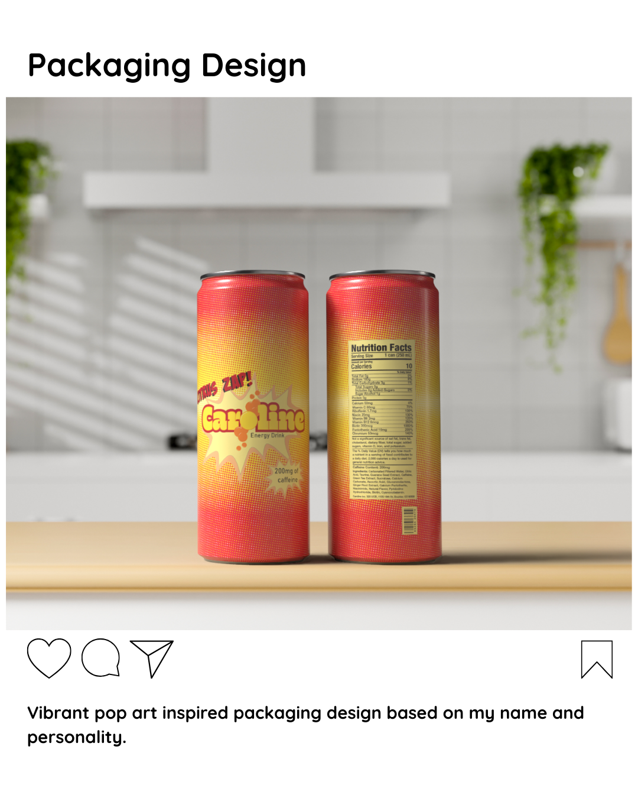
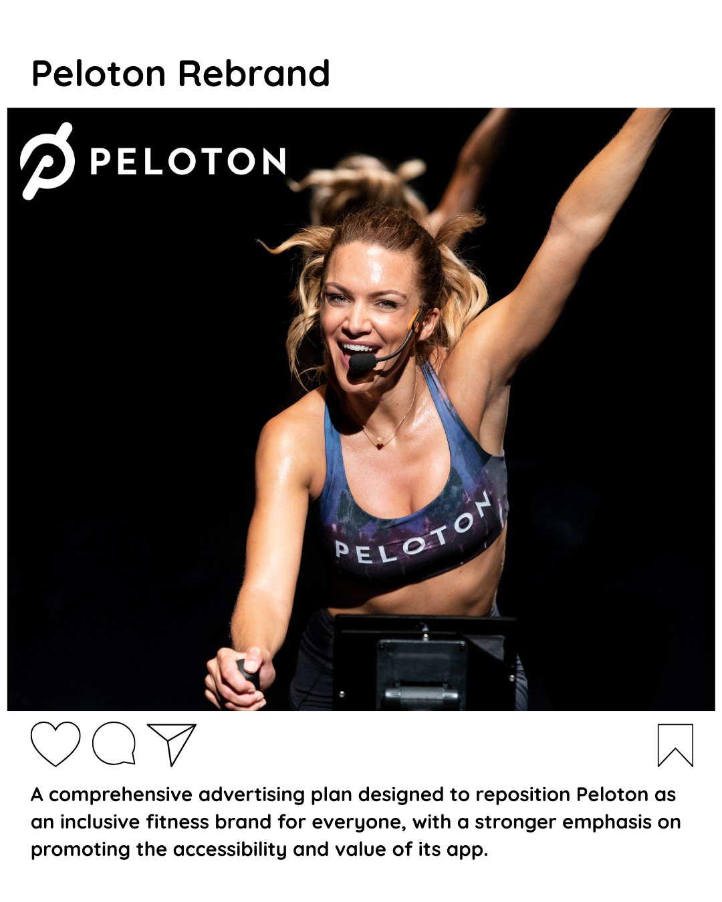
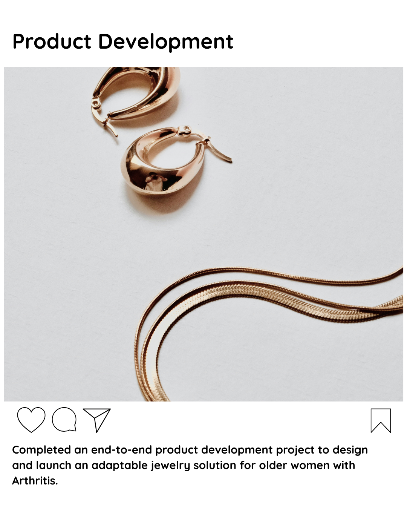
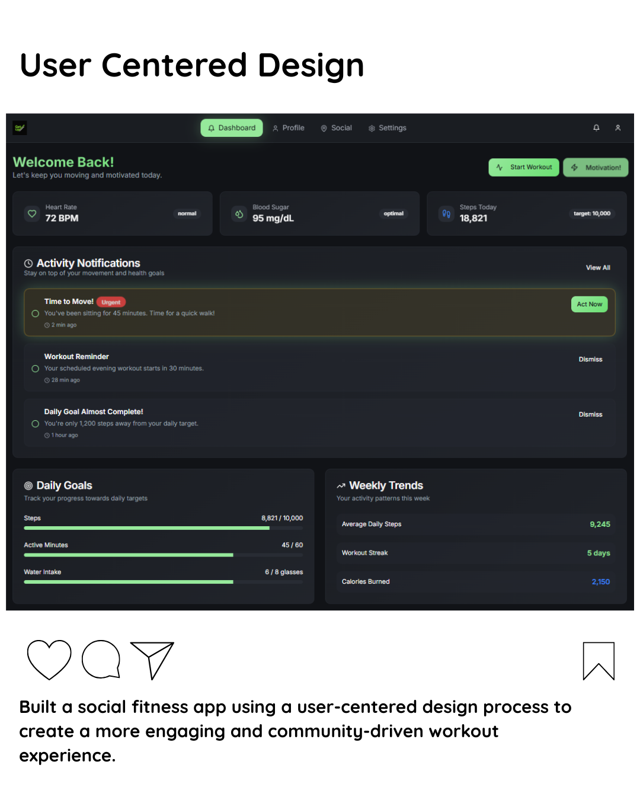

Selected work
Projects I'm
proud of
A collection of work spanning brand strategy, product design, advertising, and UX — each project driven by curiosity and a commitment to clarity.

Pop-Art Energy Drink Packaging
A vibrant, pop-art-inspired packaging suite for a new entry into the competitive energy drink market. Bold halftone patterns, high-contrast palettes, and iconic comic-style typography cut through shelf clutter to command immediate visual attention — bridging retro nostalgia with modern energy.
View project
Peloton Rebrand Campaign
High-energy experiential campaign to broaden Peloton's demographic appeal — re-positioning the brand as a performance-driven community.
View project
Adaptive Jewelry for Accessibility
End-to-end product development to design an adaptive jewelry tool that restores independence for individuals with limited fine motor skills.
View project
Social Fitness App
Designed and developed a social fitness app through a user-centered design process — focusing on community, accountability, and shared progress.
View project